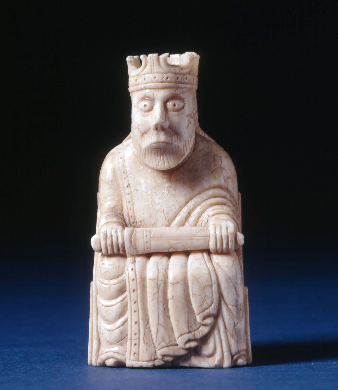

This seated king is one of 93 gaming pieces discovered in 1831 at Uig on the Isle of Lewis in the Outer Hebrides. The pieces were carved from walrus ivory around 1150 to 1200, most likely in Norway, at a time when the Hebrides were under Norse control. The king is bearded, wears a crown and mantle, and holds a sheathed sword across his lap while seated on a high-backed chair carved with interlaced arcading.
The hoard matters to my project because it is chess treated as a cultural object rather than as a record of moves. A modern chess database stores a game as a sequence of notation, ratings, and results. This king stores nothing about any game at all, and yet it carries information a database cannot hold: who played, what they valued, what a king was supposed to look like, and what material was worth carving.